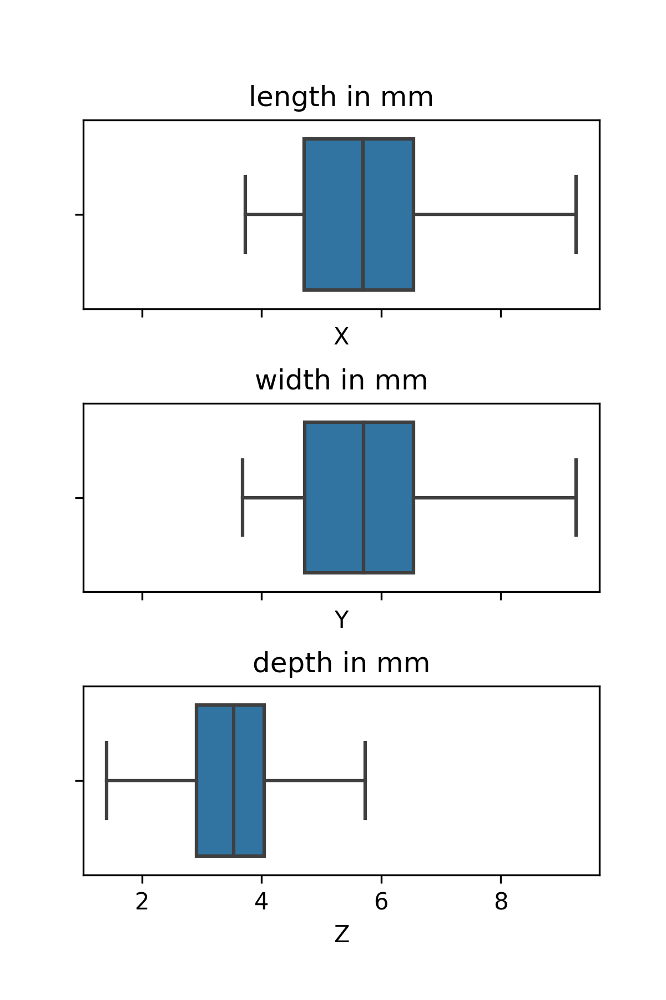

My plan before starting the coding was to practice my python skills (including libraries associated with Data Science: pandas, numpy, matplotlib, seaborn, but not those libraries, that create models). The main focus was decided to be Linear Regression and Stochastic Gradient Descent, because they are usually the first topics learned in the area.
After asking ChatGPT to come up with links to preprocessed datasets, I chose a data set listing characteristics of approx. 50,000 diamonds from Kaggle.
As the dataset was already preprocessed (no blank values, no serious outliers, etc), I started EDA. First step was to visualize each feature, to get the sense of patterns they follow.
Price
As Price of diamonds goes up, the number of them decreases. The distribution is relatively smooth with an out-of pattern increase around $5000.
X, Y, Z Diamonds are usually from 5-7 mm in length and width, and slightly smaller (3-4 mm in depth)

Carat The Carat counts follows the same distribution as price. As the "weight" of the diamond increases, the number of such gems decreases. It is also interesting, that there are distinct peaks around 0.25, 0.5, 1, 1.5, 2. It makes sense, because usually diamonds are sold in near-round units.
Price is linearly dependent on the number of carats for values lower, than 1. After that, the price seems to be independent of the number of carats. Namely, you can notice a straight vertical line above 1 on the x-axis. As frequencies decrease values on the joint plot become more opaque, so it is reasonable to look at Bivariate Kernel Density Estimation, where level curves will "surround" the regions, that correspond to diamonds with those characteristics.
On the graph above an exponential relation between the number of carats and the price is noticeable. Hypothesis about independence outlined above is even more apparent. I would assume some other features, like: clarity and cut start to play a more important role.
Color There are 7 colors: [G, E, F, H, D, I, J]. With G being the most common, and J the rarest. Color E has the lowest range (distance between upper whisker and lower whisker) in terms of the price, and thus lowest variability. Colors I and J have the largest variability. All the outliers are expensive diamonds, for every color.
Clarity There are 8 types of clarity: [SI1, VS2, SI2, VS1, VVS2, VVS1, IF, I1]. With SI1 being the most common, and I1 the rarest. Diamonds with clarity IF, VVS1, VVS2 have the smallest variability (range). Looking at an infographic explaining the clarities, we can conclude, that these are top 3 clarity levels a diamond can have. Medium level clarity diamonds have the highest variability of price.
Clarity & Color Heatmap is a great tool to see how many data entries fall into two categories at the same time. The clarity and color of most common diamonds are predictable it is a combination of G, E, F and SI, VS2 (most common for options for color and clarity respectfully). But there are at least 42 diamonds of each combination.
Cut There are 5 cut levels: Ideal, Premium, Very Good, Good, Fair. With Ideal being the most common, and Fair the rarest. It is interesting, that boxplot for all the cut types are similar to each other. I was expecting the ideal cut to be much more expansive, than the others. I would assume, that ideal cut diamonds are usually small, thus the low position of the box.
Yes, the hypothesis outlined above could be viewed on this kdegraph. Ideal cut diamonds are usually twice as small, as fair cut diamonds. Also on this graph we see the tendency of diamonds to be in approximately-round units. Distinctive peaks around [1, 0.5, 1.5, 2, 3]
As we have noticed above some features are categorical. So we have to convert string values, like: 'SI2, H, Ideal, Fair' to numbers. We can assign each option within a column a distinct number in order 1, 2, 3, etc. But I decided to implement the frequency encoding, where each category within the feature is replaced by a number of occurrences. It makes subconscious sense to me, rarer categories should have a larger price. Even though in EDA(4,5,7) I didn't notice any pattern. For example IF diamonds had the lowest mean value among all cuts.
def quant_cat(data, cat_cols): result = {} updated_data = data for col in cat_cols: occurances = {} for i in range(len(data)): current_cell = data.loc[i, col] occurances[current_cell] = occurances.get(current_cell, 0) + 1 result[col] = occurances for col in cat_cols: for i in range(len(updated_data)): current_cell = data.loc[i, col] updated_data.loc[i, col] = result[col][current_cell] return updated_data
Function quant_cat does exactly that. It only uses "pure python", so it is a great option to rewrite the function using numpy methods.
We have to normalize the values to be in the range [0, 1], so there are no issues with scaling. For example carats units are much smaller, than that of depth feature. So, "importance" of carats might be overshadowed by high values of other large features. I Decided to use min-max scaling, that linearly maps data between 0 and 1.
def normalization(data): eps = 1e-7 ndata = (data - data.min()) / (data.max() - data.min() + eps) return ndata
As of right now, all our data is inside a Pandas Data Frame, we have to convert that to vectors and matrices, so we can easily perform SGD at a later step. Some columns contain trash values, like "Unnamed: 0". Also we have to separate labels (price column) and return it as a separate vector. Function is reusable for train and test datasets.
def clean_data(data, cols_to_drop, label_col): features = data.drop(columns=cols_to_drop).values labels = data[label_col].values return features, labels
I choose to "train" linear regression on 80% of the data. And keep the rest 20% as data to see how good my weights make prediction on the data never encountered. So I create two more pandas DataFrames.
def train_test_separation(data): train_length = int(len(data) * 0.8) data_train = data.iloc[:train_length] data_test = data.iloc[train_length:] return data_train, data_test
We have to generate an array of weights. Length should be the same as the number of features, so we can multiply them together and get the prediction for the price.
def generate_random_weights(len): return np.random.rand(len)
To see how good are model is at prediction we need a metric for that. I choose mean square error, so larger errors are amplified.
def mse(y_pred, y_true): return np.square(np.array(y_true) - np.array(y_pred)).sum()
It is important to notice, that initial dataset is loaded into diamond_raw variable.
# Making sure data is suitable for the model # Convert categorical data into numeric quant_data = quant_cat(diamonds_raw, ['cut', 'color', 'clarity']) # Normalize the data norm_data = normalization(quant_data) # Separate data into 80, 20 batches train_data, test_data = train_test_separation(norm_data) # Separate features and labels and stire tham as an array train_data_clean, train_data_labels = clean_data(train_data, ['price', 'Unnamed: 0'], 'price') test_data_clean, test_data_labels = clean_data(test_data, ['price', 'Unnamed: 0'], 'price')
Again, quant_cat -> normalization -> separate -> clean.
The above could be described as "chaining", at each step we modify the data to suit our needs more.
A price of the diamond could be predicted using the following equation.
In matrix notation:
To get the weights, we must compute
Creating an error function
Function has a minimum at a critical point, where gradient is 0.
Computing:
Thus,
Setting the above to zero and computing for w, get
Getting the critical point is not enough, Hesian matrix should be computed and maximum/minimum (concave, convex) nature of the point determined.
So,
Performing spectral decomposition (??) of H, get:
So f is a convex function, and w is a minimum point.
Summarizing, when updating the weights with SGD, we assign:
So for each data entry in the train_data dataset we update the weights using the formula above. Also, we compute the mean square error to see how our weights become better at predicting the diamond price.
def SGD(weights, data, labels, learning_rate = 0.1): errors_cumulative = []; for i in range(data.shape[0]): weights = weights - (learning_rate * data[i] * (np.dot(data[i], weights) - labels[i])); # [2] error = mse(np.dot(weights, data[i]), labels[i]); errors_cumulative.append(error); return weights, np.array(errors_cumulative);
Now we can train our model. First we start off by generating random weights.
number_features = 9 initial_weights = generate_random_weights(number_features)
Then, we run the SGD
updated_weights, prog_errors = SGD(weights = initial_weights,
data = train_data_clean,
labels = train_data_labels)
As the model usually adjusts the weights significantly at the very first iterations, lets see, how error function was changing.
It dropped a lot during first 10 data entries, and after that stayed consistent. We can use the logarithm scale to see, how error function was changing after step 20.
Here we can see, that it is important to feed a lot of data to the model. It wasn't apparent from the first graph, but error dropped 100 times from initial step 20 (which seemed good enough) to step 1000.
As we have noticed above our weights after running through the whole dataset result in an error of around 10^(-6). Lets see how similar are predicted values of diamond prices to actual ones.
First we will define a function, that given a matrix of data with all 9 features and weights will return a vector of predictions. Let's name it predict_quality.
def predict_quality(weights, data): predictions = [] for i in range(len(data)): prediction = np.dot(weights, data[i]) predictions.append(prediction) return predictions
Now we can write a function, that will compare "closeness" of corresponding numbers within two arrays. It is better if the function returns a number which is a percent. We can use percentage difference formula [2]
def compute_proximity(fp, ol): percent_proximity = [] for i in range(len(fp)): v1 = fp[i] + 0.001 v2 = ol[i] + 0.001 temp = (1 - (abs(v1 - v2) / ((v1 + v2) / 2))) * 100 # [2] percent_proximity.append(abs(temp)) return percent_proximity
Running the above formulas with updated_weights on the test_data_clean to make predictions about data the model haven't seen yet, we get predictions vector, which we can compare to test_data_labels and get "similarity" in %.
predictions = predict_quality(weights = updated_weights, data = test_data_clean) proximity = compute_proximity(fp = predictions, ol = test_data_labels)
Visualizing the proximity vector with boxplot, get:
| Metric | Value |
|---|---|
| "minimum" | ~32% |
| Q1 | ~65% |
| median | ~77% |
| Q3 | ~88% |
| "maximum" | ~99% |
Now we have finished working with linear regression and SGD. As a result we have proximity vector. As a person with a little to no experience in Data Science it is hard for me to be happy or sad about the results. Because I do not know whether outcome is good or bad. We can utilize libraries like TensorFlow and Keras to create a neural network, create a new proximity vector based on the results of a new model. Comparing them to my linear regression result. Let's start to do that.
import tensorflow as tf from tensorflow import keras from tensorflow.keras import Sequential from tensorflow.keras.layers import Dense
First we import the necessary libraries and classes (explanations in the library are taken from TensorFlow documentation)
| Class | What does it do? |
|---|---|
| Sequential | Grouping layers into tf.keras.Model |
| Dense | Fully-connected Neural Network layer |
Then we can create our model, describe how many neurons are in each layer, what type is it? - Dense and other options, like activation function (purpose: create non-linear transformation). It is also a good practice to see the summary of the model. At the last layer we choose to have only one neuron - to make a single numeric prediction in the range [0, 1), which later we can compare to the test_data_labels. The number of neurons in other layers is random, but as I understand the number has to gradually decrease.
model = Sequential()
model.add(Dense(units = 64, input_shape = (9,), activation = 'relu'))
model.add(Dense(units = 16, activation = 'relu'))
model.add(Dense(units = 1, activation='linear'))
display(model.summary())
In the summary we can see how many layers, neurons and parameters we have in out model. Parameters represent the number of weights. In the case of linear regression we only had 9. But with TensorFlow ~200 times more, so I expect much greater proximity of data.
model.compile( optimizer = 'sgd', loss='mse', metrics=['mse'] );
Now we can compile the model. We will use SGD optimizer. To have the same "methodology" as in my "from-scratch" example earlier.
| Option | What does it do? Our options value |
|---|---|
| optimizer | optimizing algorithm used during training. SGD |
| loss | function to compute the error during training. Mean Square Value |
| metric | additional information about the performance of the model. Mean Square Value |
In our case metric is the same as loss, so we expect the same results from them.
trd = tf.convert_to_tensor(train_data_clean.astype(np.float32)) trl = tf.convert_to_tensor(train_data_labels.astype(np.float32)) ted = tf.convert_to_tensor(test_data_clean.astype(np.float32)) tel = tf.convert_to_tensor(test_data_labels.astype(np.float32))
We convert the data from the numpy vectors to data structure tensor flow understands - tensor. The main difference is that np uses 64 bits to represent floating point numbers, when ts uses 32 bits. So transformation is necessary.
model.fit(trd, trl, epochs = 10);
Then we train the data over 10 epochs.
Now we can use the model to predict the data. So we can test it out on ted. TensorFlow returns the predicted values as an array, but consisting only of one values. to better fit our compute_proximity function we can use flatten function to have a single array.
predictions_tf = model.predict(ted).flatten() proximity_tf = compute_proximity(fp = predictions_tf, ol = test_data_labels)
We have two proximity vectors, so we can plot two boxplots side by side and compare the results.
| Metric | Scratch | TensorFlow |
|---|---|---|
| "minimum" | ~32% | ~10% |
| Q1 | ~65% | ~55% |
| median | ~77% | ~70% |
| Q3 | ~88% | ~85% |
| "maximum" | ~99% | ~ >100% (??) |
We can see, that the initial linear regression produced better results. Our second model may be wrong, because of Overfitting, but I will consider this concept in a later project. Initial goal of getting familiar with Linear Regression, SGD and basic python libraries is achieved.
Used technologies (content itself as well as writing this blog post)
Author: Vasilii Nikonov
License CC BY-NC-SA 4.0